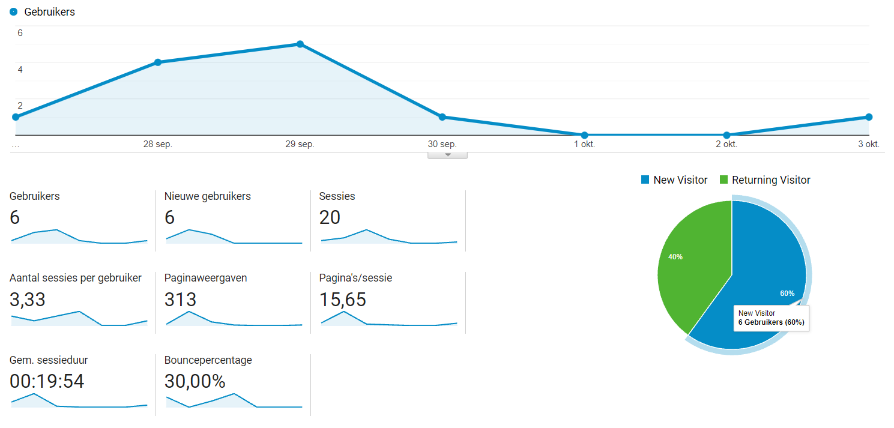
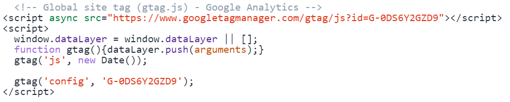
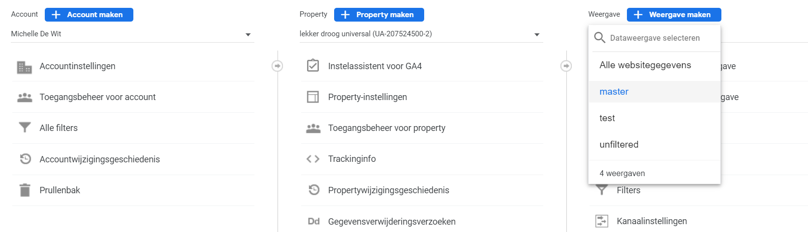
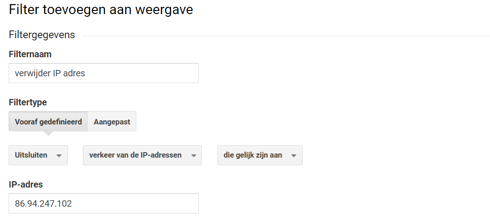
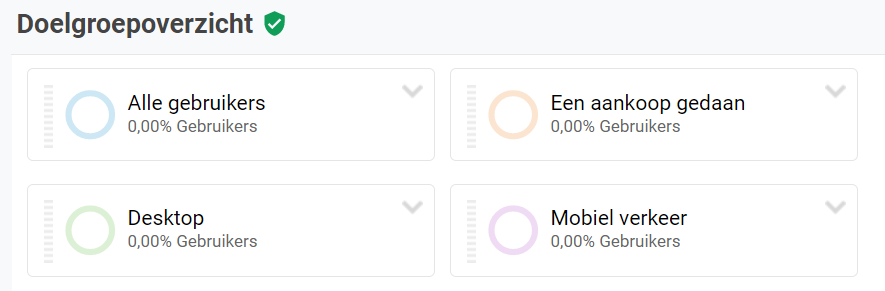
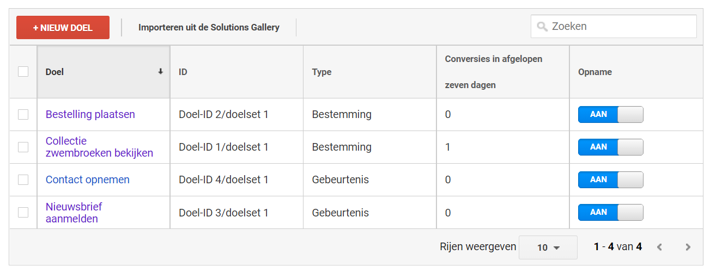
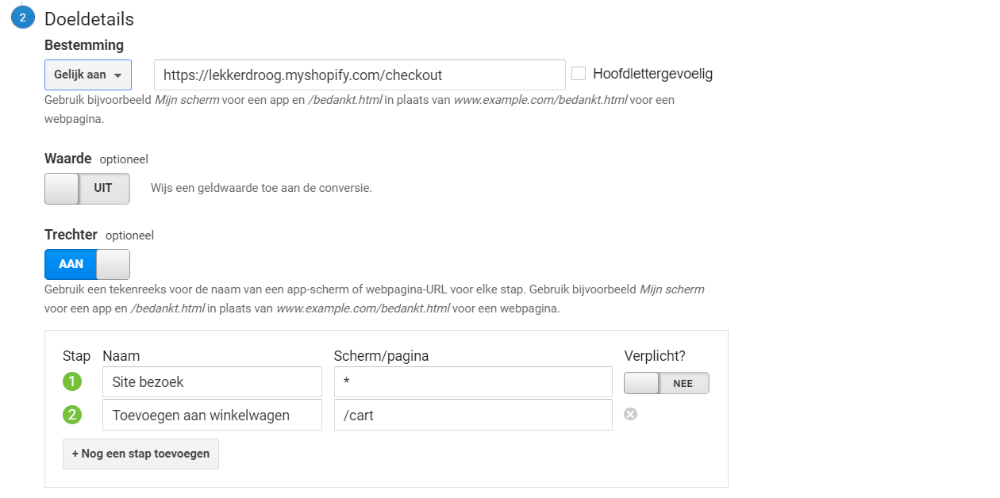
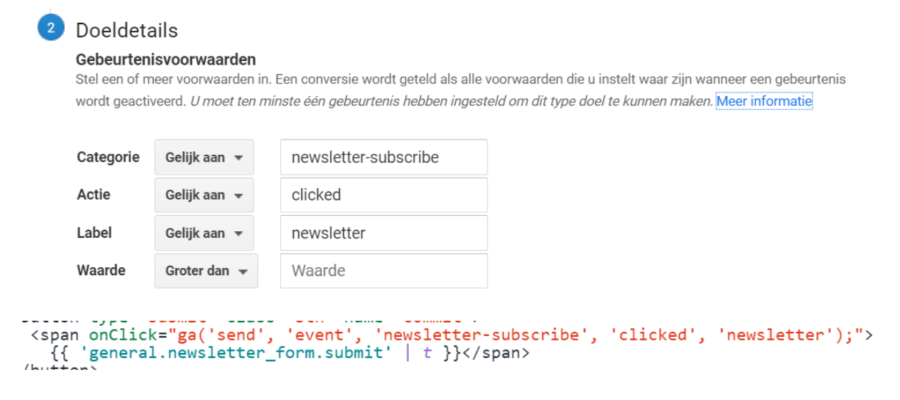

Google Analytics koppelen
Voor de webshopopdracht heb ik de website van lekker droog gekoppeld
aan
Google Analytics. Ik had nog nooit met deze tool gewerkt dus als eerste stap heb ik een Google Analytics
account aangemaakt. Vervolgens heb ik in mijn account een property aangemaakt welke is gekoppeld aan de
lekker droog domeinnaam. Om Google Analytics ook daadwerkelijk in de webshop te gebruiken heb ik de
Google
Analytics code toegevoegd aan de code van de website.

Dataweergaves
Ik heb verschillende dataweergaves aangemaakt in de property. De
dataweergave "unfiltered" is de ruwe data waarin bijvoorbeeld geen filters zijn toegepast, dit is een
weergave waar dus de gegevens die worden verzameld ongefilterd worden getoond. "test" is de dataweergave
waarin aangemaakte filters of doelgroepen kunnen worden getest of deze juist zijn geïmplementeerd. Als
bijvoorbeeld een filter dan juist is geïmplementeerd kan ik deze overzetten naar de "master" waarin dus
de
ingerichte GA dataweergaves met de werkende filter wordt getoond.

Filteren
Om alleen de data van bezoekers te verzamelen en dus niet van
werknemers
die bijvoorbeeld nieuwe elementen aan de website toevoegen te kunnen onderscheiden heb ik een filter
opgesteld. De filter "verwijder IP adres", hierin worden alle bezoekers uitgesloten die gelijk zijn aan
een
waarde en in dit geval een IP adres. Op deze manier raakt de data niet vervuild met gegevens van
werknemers
die werkzaamheden aan de website uitvoeren.

Doelgroepen
Om alleen de data van bezoekers te verzamelen en dus niet van
werknemers
die bijvoorbeeld nieuwe elementen aan de website toevoegen te kunnen onderscheiden heb ik een filter
opgesteld. De filter "verwijder IP adres", hierin worden alle bezoekers uitgesloten die gelijk zijn aan
een
waarde en in dit geval een IP adres. Op deze manier raakt de data niet vervuild met gegevens van
werknemers
die werkzaamheden aan de website uitvoeren.

Conversies
Om te meten hoe vaak gebruikers specifieke acties succesvol uitvoeren
heb
ik conversies opgesteld. Zoals hoeveel mensen succesvol een collectie bekijken of een aankoop succesvol
afronden.

Trechters
Voor het meten van een succesvolle bestelling heb ik een trechter
opgezet. Hiermee is het mogelijk om doelen op te splitsen zodat bijvoorbeeld kan worden ingezien waar
het in
het bestelproces is misgegaan. Waarom verlaten zoveel gebruikers de winkelwagen of waarom wordt de
checkout
pagina niet bereikt.

Conversies koppelen aan event
Ik heb ook enkele doelen opgesteld waaraan een event is gekoppeld
zoals
het aanmelden voor de nieuwsbrief. Voor event goals heb ik een doel opgesteld met verschillende
eventvoorwaarden. Deze voorwaarden komen dan weer in de code voor de knop terug waardoor dit doel kan
worden
gemeten.

Reflectie
Aangezien het de eerste keer was dat ik Google Analytics heb gebruikt
na
het behalen van de certificaten vond ik het op het begin lastig om een start te maken. Zo was ik
bijvoorbeeld een paar uur bezig met het switchen van Google Analytics 4 naar Google Analytics Universal.
Toen de start eenmaal was gemaakt ging het steeds makkelijker en kon ik ook de kennis die ik had
opgedaan
middels de certificaten toepassen zoals: het maken van de verschillende views, uitsluiten van ip
adressen en
het opstellen van doelen.
De volgende keer als ik Google Analytics ga inrichten in een website wil ik mij meer verdiepen in het
maken
van doelen in GA. Doelen die ook daadwerkelijk aan Key Performance Indicators gekoppeld zijn. Verder zou
ik
om mij willen verdiepen in Google Tag Manager zodat ik bijvoorbeeld voor events geen aparte code meer
hoeft
te implementeren maar dit met Tag manager kan gaan toepassen.